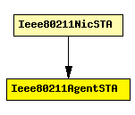

File: NetworkInterfaces/Ieee80211/Mgmt/Ieee80211AgentSTA.ned
C++ definition: click here
Used in 802.11 infrastructure mode: in a station (STA), this module controls channel scanning, association and handovers, by sending commands (e.g. Ieee80211Prim_ScanRequest) to the management module (Ieee80211MgmtSTA).
Author: Andras Varga
The following diagram shows usage relationships between modules, networks and channels. Unresolved module (and channel) types are missing from the diagram. Click here to see the full picture.
If a module type shows up more than once, that means it has been defined in more than one NED file.
| Ieee80211NicSTA | This NIC implements an 802.11 network interface card, in a STA, using infrastructure mode. |
| Name | Type | Description |
|---|---|---|
| activeScan | bool | selects between active and passive scanning |
| channelsToScan | string | list of channel numbers to scan (space delimited); empty means all channels |
| probeDelay | numeric const | delay before sending a probe request during active scanning |
| minChannelTime | numeric const | min interval to spend on a channel during active scanning |
| maxChannelTime | numeric const | channel time for passive scanning, and max channel time for active scanning |
| authenticationTimeout | numeric const | timeout for the authentication procedure |
| associationTimeout | numeric const | timeout for the association procedure |
| Name | Direction | Description |
|---|---|---|
| mgmtIn | input | |
| mgmtOut | output |
simple Ieee80211AgentSTA parameters: activeScan: bool, // selects between active and passive scanning channelsToScan: string, // list of channel numbers to scan (space delimited); empty means all channels probeDelay: numeric const, // delay before sending a probe request during active scanning minChannelTime: numeric const, // min interval to spend on a channel during active scanning maxChannelTime: numeric const, // channel time for passive scanning, and max channel time for active scanning authenticationTimeout: numeric const, // timeout for the authentication procedure associationTimeout: numeric const; // timeout for the association procedure gates: in: mgmtIn; out: mgmtOut; endsimple